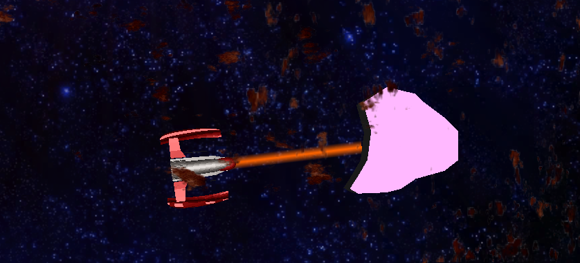

This was an implementation of Marching Squares in Unity. I used an entry in the Unify Community Wiki for Unity3D (
MarchingSquares), and modified it so that the generated mesh could be deformed in real time, and after reaching a certain threshold, would disappear. This was my primary responsibility on Project ACIDA, a game two other students and I made for our Video Game Design Course.
Possible Updates Include: The ability to split asteroids (using a*), the ability for concave asteroids to collide, and the ability to have a true material instead of a single diffuse color.
(Source)
This is an implementation of Jerry Tessendorf's whitepaper "Simulating Ocean Water." It uses an FFT method to calculate the height at any given point on the surface, based on a statistical wave model.
Possible Updates Include: Converting all surface deformation into OpenCL or CUDA, Automatic Underwater transition, Terrain Interaction (with Unity's Terrain system), Object Interaction via Cem Yukse's whitepaper "Wave Particles."
(Source)
Intergalactic Looby[WIP]
This is a game based on Temple Run and Sonic Dash I helped make while working for Synaptic Switch. It started out as our project for our Software Engineering class, where we are required to find a client who needs a product. Synaptic hired us on as interns for a semester, delivering weekly milestones and prototyping underdesigned elements, such as flying and grindrails, as well as monthly presentations to our class about our progress. It culminated in two things for us: a presentation at our university's Student Showcase(link), and jobs with Synaptic Switch. My responsibility was implementing the movement mechanics. Jumping, moving side to side, flying, grinding on rails, and each new track from the artist. To help accomplish these goals, I utilized iTween, a free tweening plugin for Unity that helped me smooth movements on the rails. For NDA reasons, I cannot provide the source, but I can show a web build, and the link to the game in the iOS App Store (currently awaiting release).